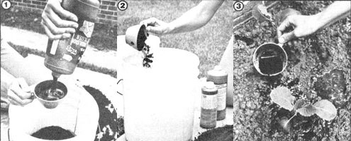

Give your plants a "shot-in-the-stalks" with.. .
Although you probably already "feed" your garden with applications of organic fertilizers, dry weather and heavy demands for minerals can still retard plant production about halfway to the harvest. In addition, a catalyst may sometimes be needed before your vegetables and flowers can even "get at'' much of the food that's already locked into the soil.
"Kickabrew" is a homemade mixture that can take care of these problems. And-like the original "kickapoo" concoction of the comic strip-this growth stimulator can give your garden a powerful boost!
Since much of our soil has lost its nutrients to the oceans, it's only logical that we turn to the sea to reclaim some of those same elements. That's what kickabrew does: The formula-which can be made in any amount desired-is 1 part fish emulsion, 2 parts kelp (dehydrated, powdered seaweed ), 10 parts dried cow manure, and 50 parts water. (If you use wet manure ... increase its quantity by onethird.)
To mix this preparation, use a container with some kind of cover (to keep out flies and prevent the escape of annoying odors). Then, let the brew stand for a day or so, stirring it occasionally to blend the ingredients.
Corn, tomatoes, squash, melons, pe pers-and most of your flowers and shrubs-will respond favorably to a pint of the powerful potion. Just pour half of the measure over the leaves (where the plant will take in some of the food immediately) and pour the other half at the base. (Be sure the application is followed by a heavy watering or summer shower to transport these natural nutrients to the roots.)
However, don't rush out and dose your garden too soon. Such a potent stimulant should only be given to well-established plants that have had time to form substantial root systems.
Vegetables and flowers can be treated twice during their growing seasons, but even one drink will make a big difference in your food and floral yields. Established shrubs and Imes should be given three doses during the late spring and early summer, so their new growth will mature well ahead of the first autumn freezes.
For acid-loving plants-such as blueberries or strawberries, sweet azalea, spice bush, and hydrange a-simply add a teaspoon of cider vinegar to each pint of brew .. . then, sit back and watch these bushes take on a glossy new look!
But, remember ... kickabrew application is a somewhat smelly job, so put on your old clothes and shoes before you start. (Isn't It strange how the most malodorous mixtures seem to turn out the tastiest, biggest vegetables and prettiest flowers?)
So, whip up a batch of homemade stimulator and give your garden a little "libation". Believe me, you'll get ample thanks come harvest time!
|
 [1] and [2] To mix up a batch of kickabrew, combine 1 part fish emulsion, 2 parts kelp, 10 parts dried cow manure, and 50 parts water. [3] Pour half the measure over the leaves of your plants, spread the rest at the bases of their stems ... and then watch your greenery grow! |
|
|